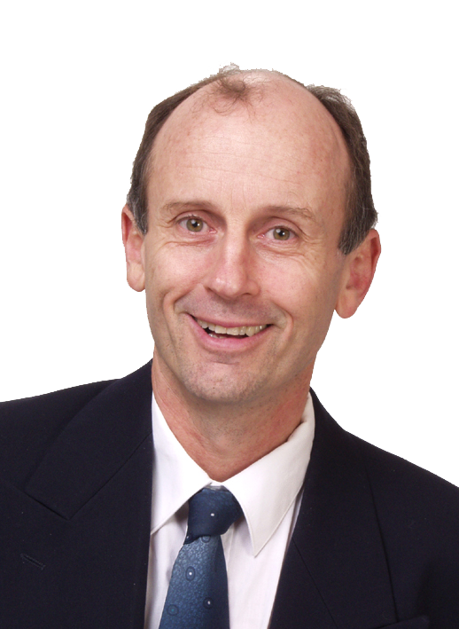

Address: 95 Wyndham Road,
Pinehaven, Upper Hutt
5019, New Zealand
Phone: +64 21 101 7360
Email: enquiry.energymodeling@gmail.com
Contact Us
Contact Details
Address: 95 Wyndham Road,
Pinehaven, Upper Hutt
5019, New Zealand
Phone: +64 21 101 7360
Email: enquiry.energymodeling@gmail.com
Contact Us
Energy Modeling Consultants Ltd provide modeling and analysis consulting services to the electric power industry. A major focus of expertise is optimal generation scheduling especially for hydro-thermal power systems, providing tools for real time, day ahead and week ahead scheduling, as well as models for medium term operations planning and investment analysis. Consulting services provided include
- Analysis and modelling of hydro-thermal power systems
- Development of power system models
- Specification of scheduling and planning models
- Testing of proprietary modeling systems
- Application of existing models to support clients' business analysis needs
Tom works closely with Power Systems Research Incorporated of Rio de Janeiro, Brazil. Their SDDP model is ideal for many medium and long term hydro-thermal power system analysis needs. For bespoke modeling, Dash Optimization's Xpress-MP optimisation tools have been used. Very efficient development of powerful linear, mixed integer and some types of non-linear models is possible with Dash's Mosel modeling language and the Xpress-MP solver.